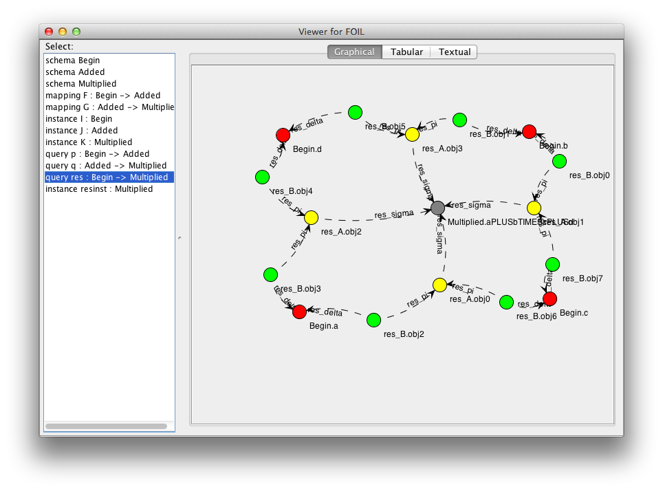
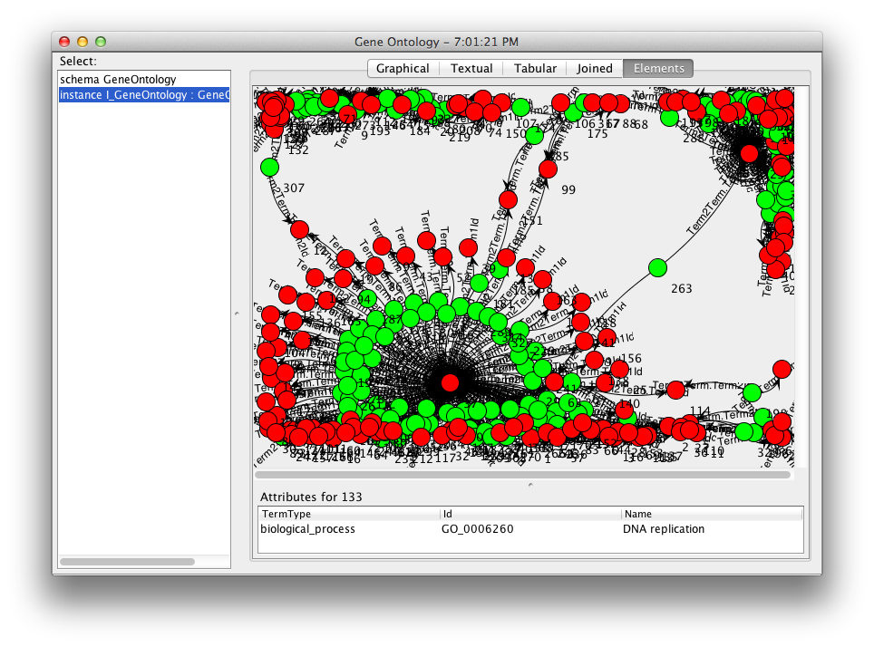
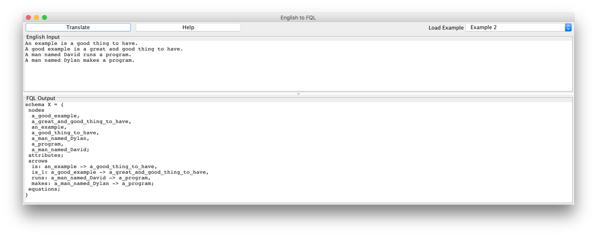
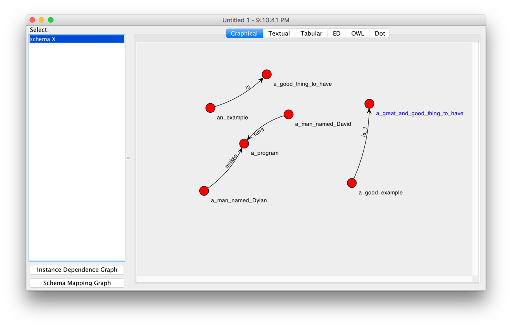
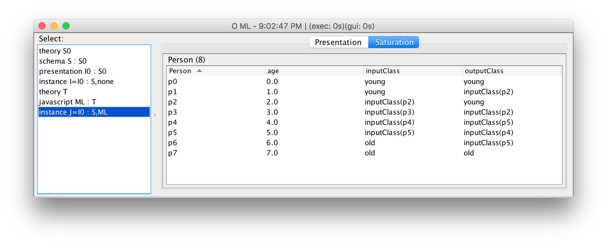
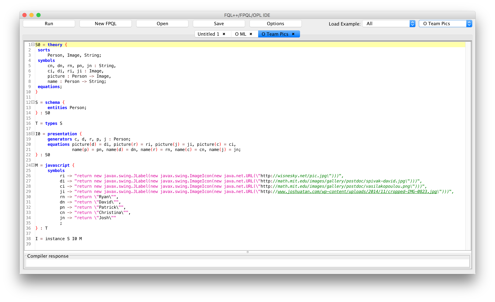

Screen Shots
An employee schema and instance:

A visualized employee instance:

A schema mapping:

SQL generation:

Queries formalized as unions of joins of projections:

Category of Elements for Genome data:

English translator:
 
An employee schema, as text:

An employee instance, as text:

A schema instance, visually:

Machine learning:

Nested data:

Team members:

Team members, as text:

Back to CQL